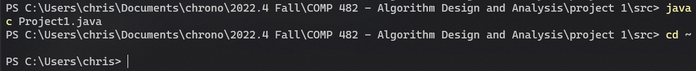
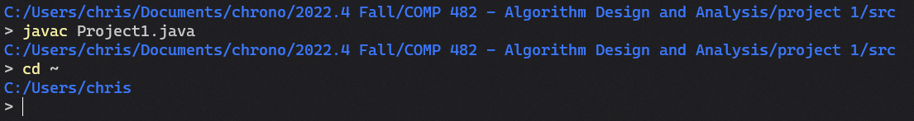
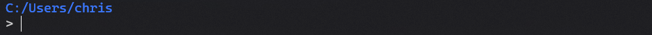

how to customize terminal prompts in Windows
Which looks better?


The second one, of course. The color is nice, but most importantly, what you type will appear on the next line after the current path. Yet, the first is the default in Windows for many terminals (like the VS Code terminal, Windows Terminal, PowerShell, etc.).
Here's how to make the change for all terminals:
- In any terminal, enter
notepad $profile. This should open a file. - In that file, paste this:
# https://hodgkins.io/ultimate-powershell-prompt-and-git-setup
function prompt {
$realLASTEXITCODE = $LASTEXITCODE
Write-Host $($(Get-Location) -replace "\\", "/") -ForegroundColor Blue
$global:LASTEXITCODE = $realLASTEXITCODE
return "> "
}- Save the file and restart the terminal.
Now you should see something like this:

There are also many other prompt customizations possible such as showing only the current folder instead of the full path, or replacing the home directory with ~. Here's a guide that shows some other customizations (not just for PowerShell): Ultimate PowerShell Prompt Customization and Git Setup Guide by Matthew Hodgkins.